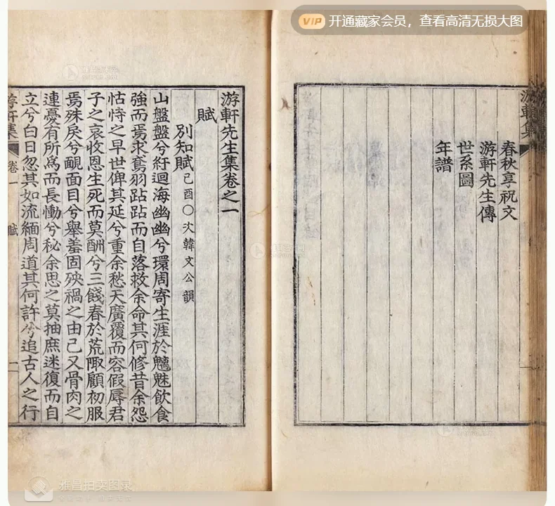

 点击图片可查看大图 · 原始图像 790×720 px 未提供 游轩先生集四卷附录一卷年谱一卷（朝鲜）丁熿撰 丁熿 · 自查：1821-1851 成交记录未提供 估价RMB 8,000 记录信息 拍卖日期2013-09-06 13:30 拍卖公司北京卓德 拍卖专场2013年夏季艺术品拍卖会 古籍善本暨书画专场 创作年代自查：1821-1851 · 1821年 开本30.7×19.3cm 尺寸类型开本 高 × 宽30.7 × 19.3 cm 纸张原表未著录 成交价原文无成交价（未提供） 来源位置Excel 第 26 行